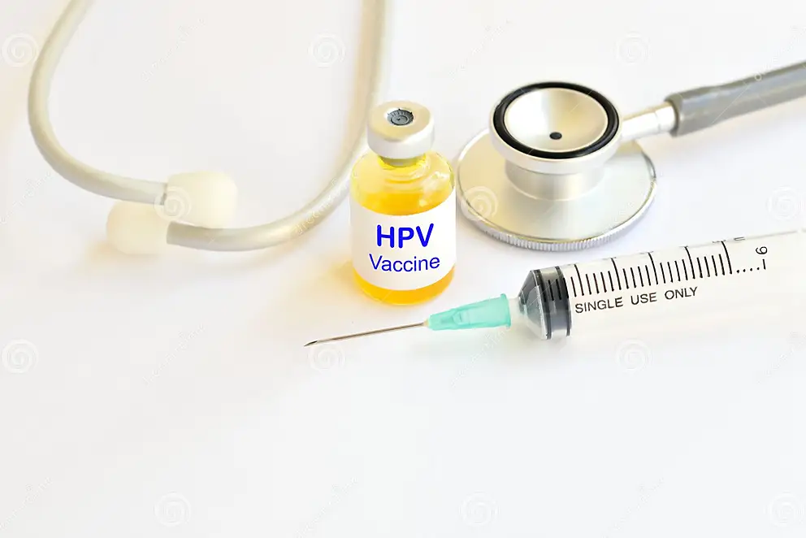

BOOK YOUR CHILD'S VACCINATION
WHAT WE DO
Welcome here where we priotize your daily
life if you are sick,
we make your child's life safe
whenever he/she needs the vaccine.
The problem of going back home without getting
the service you need is what we avoid
vaccines are among the greatest advances in grobal
health and development. the vaccination
process of child affect his/her future better prepare your child
by making sure that hegets the vaccines he/she
needs to get in the right time.
vaccination world wide deserve appreciation
we need to remove the gap where some child don't
get vaccines in better ways
the vaccinated child do better in school,
they play ,dance and learn becouse of the vaccines
that protect their life from sickness.
VACCINES BY AGES
there is pregnancy vaccination,birth,1-2 months
,3-4 months,5-6 months,7-11 months,12-23 months
,2-3 years up to any age where you need vaccine to protect your life.
WHO IT CONCERN
the first people this service conern is
Parents have responsibility to know well the
health of the child , no worries you come here in
order to get the appointment for your child
with this appointment you will have 100% trust
of getting this service.
the second people it concern is doctors
they are the one who are responsble of giving better service
the doctors in this webpage there are here to know what
child or patient they have appointed
to and the time of their appointment,
they are poffessional becouse they are here to give vaccines and treatment
to the people or child who are looking for it
the third people this concern is the patient
who want to reserve time to get treatment